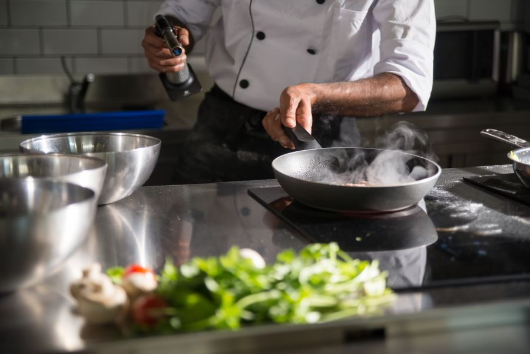
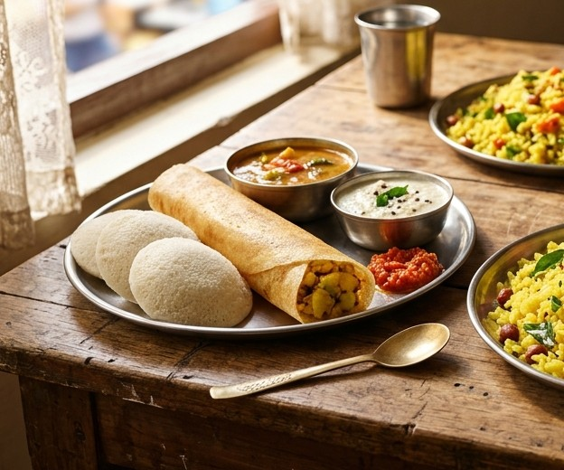

Cleanliness You Can See, Smell, and Verify Yourself
For students eating with us every day, kitchen hygiene isn't a marketing slogan—it's what keeps you energetic through lectures and exams. Here is how we maintain a spotless, home-like cooking environment every single day.
An Open Kitchen Policy for Students and Parents
We believe the best proof of cleanliness is an unlocked kitchen door. Any student or visiting parent can request a hairnet at the reception counter and inspect our vegetable washing bay, dry store, and cooking line between 10:00 AM and 8:00 PM.
Our kitchen floor is laid with non-porous anti-skid tiles, food-grade 304 stainless steel prep tables, commercial chimney exhausts that prevent grease buildup, and pest-screened ventilation windows.
304-Grade Steel Counters
Zero wooden chopping blocks that trap moisture or bacteria.
Fresh Batch Cooking Only
No gravies carried over to the next day's meal service.
Color-Coded Zones
Strict physical separation between Pure Veg and Egg/Non-Veg bays.
Zero Artificial Additives
No baking soda in dals, no synthetic food colors, and no MSG.


6 Pillars of Our Daily Hygiene Standard
From 6:00 AM vegetable delivery to 10:00 PM deep floor scrubbing, every stage follows a documented checklist.
1. Ingredient Sourcing & Storage
Vegetables arrive fresh every morning at 6:00 AM—never stored in wilted heaps for days. Dry grains, unpolished lentils, and MP Sharbati wheat flour are stored off the floor in airtight food-grade steel bins with First-In, First-Out (FIFO) date labels.
2. Triple-Wash Food Prep
All leafy greens, tubers, and vegetables undergo a 3-stage wash: running water rinse to remove soil, a 15-minute soak in mild salted/turmeric water, and a final rinse in filtered RO water before chopping on color-coded food-safe boards.
3. Staff Grooming & Discipline
Every cook, helper, and server begins their shift with a mandatory handwash, trimmed-nail check, clean washed cotton apron, hairnet/cap, and food-grade gloves for salad cutting and serving. Any staff member with a cold or fever is given paid rest away from the kitchen.
4. Safe RO + UV Water System
We use commercial RO + UV purified water not only in the dining hall drinking dispensers, but also for kneading chapati dough, boiling dal and rice, and blending chutneys and buttermilk—protecting students during monsoon months.
5. 3-Sink Hot Water Dishwashing
Stainless steel thalis, katoris, tumblers, and tiffin boxes pass through a 3-stage wash: high-pressure pre-rinse, food-safe degreasing scrub, and a final hot-water sanitizing rinse before air-drying on elevated steel racks.
6. Covered Bain-Marie Serving
Prepared food is held in temperature-controlled stainless steel bain-maries with lids, served using long-handled ladles by gloved staff. Rotis are transferred directly from the iron tawa into clean unbleached cotton cloth baskets.
Our 4-Shift Daily Kitchen Cleaning Routine
Cleanliness is maintained continuously between every meal service, not just once at the end of the night.
| Time Window | Shift Phase | Cleaning & Sanitation Tasks Performed | Checked By |
|---|---|---|---|
| 06:00 AM – 06:45 AM | Pre-Breakfast Sanitization | Sanitizing steel prep tables, checking RO water TDS log, inspecting staff aprons/hairnets, and triple-washing morning vegetables. | Morning Kitchen Supervisor |
| 10:00 AM – 11:00 AM | Post-Breakfast Reset | Washing breakfast vessels, mopping dining hall tables & floors with mild eco-disinfectant, and prepping lunch cutting boards. | Dining Hall Steward |
| 03:00 PM – 04:15 PM | Afternoon Deep Wipe | Degreasing stove tops & tawa stations, clearing wet biodegradable waste into sealed bins, and 3-sink hot rinse of all lunch thalis. | Head Cook & Steward |
| 10:00 PM – 11:00 PM | Nightly Kitchen Shutdown | Full floor scrubbing with hot water & degreaser, sealing dry ration bins, cleaning drain traps, and drying all utensils on elevated racks. | Mess Manager Sign-Off |

5 Realistic Commitments We Stand Behind Every Day
We don't make exaggerated claims—we follow practical, everyday kitchen discipline that any student can verify at our counter:
- Zero Re-Used Frying Oil: Oil used for occasional snacks or puris is never topped up and reused across days.
- Transparent Branded Rations: We use standard household-grade oil, spices, and grains that we openly display in our dry store.
- Same Food for Staff & Founders: Our kitchen team and mess managers eat from the exact same vessels served to students.
- Plastic-Free Hot Serving: We never pour hot dal, sambar, or tea into thin plastic bags or styrofoam cups.
- Immediate Replacement Guarantee: If any dish ever feels cold or over-salted, we replace it at the counter without hesitation.